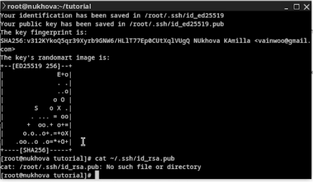
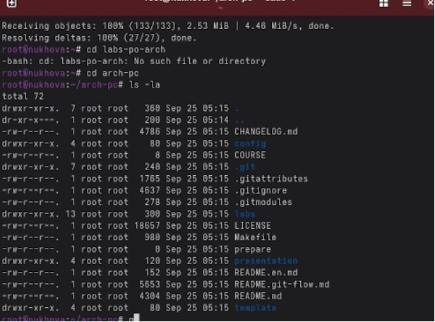

Лабораторная работа №2
Именованные каналы
Цель работы
- Изучить идеологию контроля версий
- Освоить практические навыки работы с Git
- Научиться управлению версиями проектов
Настройка Git
Базовая конфигурация
git config –global user.name “Имя Фамилия” git config –global
user.email “work@mail”
 Настройка пользователя
Настройка пользователя
Создание репозитория
После инициализации в каталоге появляется .git: - Хранит
историю изменений - Отслеживает версии файлов - Управляет ветками
 Создание репозитория
Создание репозитория
Игнорирование файлов
Настройка .gitignore
- Указывает шаблоны игнорируемых файлов
- Исключает временные файлы
- Оптимизирует репозиторий
 Настройка .gitignore
Настройка .gitignore
SSH ключи
Безопасное подключение
- Создание ключей для аутентификации
- Безопасная работа с удаленными репозиториями
- Упрощение доступа к GitHub

Создание SSH ключей
Завершение работы

Финальные настройки
Вывод
- Освоили идеологию контроля версий
- Приобрели практические навыки работы с Git
- Научились настраивать локальный репозиторий
- Подготовили систему для работы с GitHub